盛夏是最热的一个月，人在这个月应该有一定的休息时间。但有些朋友因为工作非常忙碌，少有休息时间，这种情况持续到了立秋以后，身体往往会出现肺气不足的症状。
肺气不足有两个表现：
第一，说话的时候气短、乏力。
第二，每天早上会醒得比较早，凌晨三四点钟就会醒来，醒来后就再也睡不着了。
肺气不足后，如果再受到一点寒凉或者吃了一些生冷瓜果，就会发生便溏或者腹泻，这跟立秋之后体内有湿气而引起的拉肚子是不一样的，需要通过补气来调理。
肺气不足的朋友，最适合吃立秋时的十全大补酒糟鸡。
十全大补酒糟鸡这个食方既能补气，又能补血，还能补肺、补肾、健脾、养胃，所以就把它称为“十全大补”。
它很适合体虚的人吃，老年人如果觉得腿脚无力，在这个时节也可以吃，产妇吃了可以补气血，小孩子也可以适当吃一点，能增长智力。
这道食方所用的原料特别简单，只有两样主料和两样辅料而已。
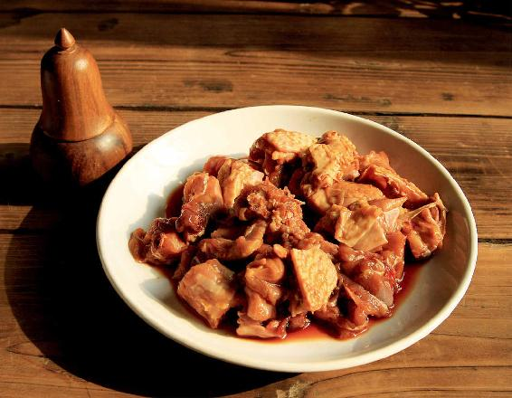
十全大补酒糟鸡
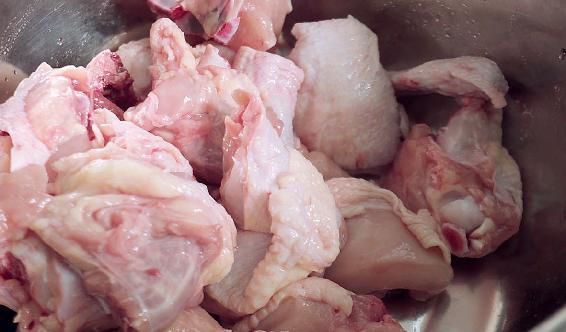
原料：一只柴鸡（土鸡），一碗醪糟，盐、油。
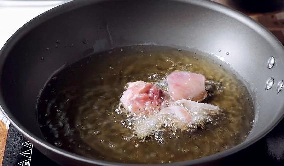
做法：
1.先把收拾干净的整鸡切成块，加一点点盐腌上半小时，让它入味儿。
2.锅里放油加热，油要多放点。
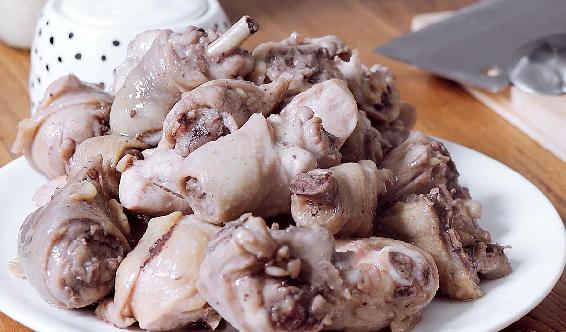
3.把切好的鸡块放进去炸熟，再捞出来，把油沥干净。
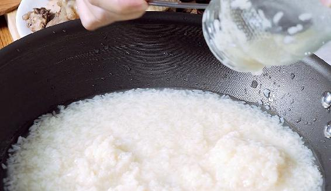
4.再取一口锅，锅里不放油，只放醪糟（醪糟如果是自酿的，会比较稠，可以加一点点水；如果是从超市买的，不是特别稠的那种，则不需要加水）。把炸好的鸡块放进去，打开大火，煮开以后就可以起锅了。
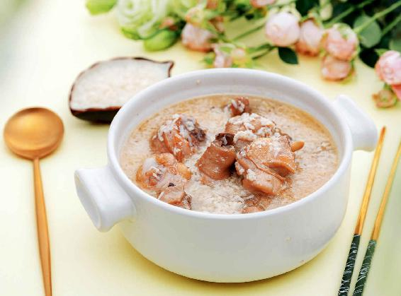
允斌叮嘱：
1.醪糟是很容易煮开的，煮开之后您就马上关火，不需要久煮，煮的时间长了以后它会变酸的。
2.如果您是给小孩吃的话，那么可以用一半的醪糟一半的水先煮开，再把鸡块放进去，煮一会儿以后放入醪糟，再次煮开以后就可以起锅了。
3.注意在煮的整个过程中，不要盖锅盖，这样才能让醪糟的酒气散发掉，小孩子吃就没有问题了。
4.醪糟是这道食方的一个主料，所以在把鸡块煮软的情况下，醪糟要用稠的，也就是连水带米一起下锅，这样吃起来补益的效果才更好。
5.如果您觉得这道食方做起来费时间，也可以一次多做点，然后放在冰箱冷藏，每天从冰箱拿一点出来，可以连吃一个星期。
6.这个酒糟鸡非常补，即便您觉得它很好吃，也不要多吃，每天吃一小碗就可以了，只要吃上一个星期就能让您气色变好，而因肺气不足造成的立秋后早醒睡不着的现象也会得到缓解。
除了上面我说到的一些症状之外，如果您觉得自己难以判断，那么可以用一个最简单的指标——体重来衡量。
如果夏天过后您体重增加了不少，那么先用我前面分享的两个减肥食方（见第14-15页）。
如果您经过一个夏天后体重还减轻了，或者您一直都很瘦弱，那么就可以吃十全大补的酒糟鸡。
读者评论：吃了十全大补酒糟鸡，睡得那叫一个香啊！
华艳：今天做了十全大补酒糟鸡，味道很好！
小米：允斌老师，十全大补酒糟鸡实在太好吃了。我每年做这道菜的时候都按你教的方法，先用盐把鸡块腌半小时，再油炸，然后放入醪糟煮开。每次都是吃得停不了口。
听风 序语：我怕腻，但我觉得十全大补酒糟鸡很好吃。
幸运女神_：中午做了十全大补酒醩鸡，妈妈、老公和我每人一小碗，吃完以后，从下午三点睡到五点，睡得那叫一个香啊！起来后发现脸色也超好。
有些人：昨天晚上吃了十全大补酒糟鸡，一觉睡到了上午，都撩不开眼皮，以前都是凌晨三四点就醒了的。
允斌解惑：早上喝黄芪粥，中午吃酒糟鸡
洒脱：早上喝黄芪粥，中午吃酒糟鸡，可以吗？
允斌：可以。
在初秋发生腹泻和大便不成形的人中，有些情况比较复杂，就是其他季节可能大便有点干，但到了初秋大便会不成形，或者其他季节经常便秘，但到了初秋好像吃什么都容易拉肚子，有这些情况应该怎么调理呢？
如果您具有以上这些情况，那么再好好想一下，自己平时是不是也会出现大便时干时稀的现象，且有时候肚子气很多，感觉到咕噜咕噜的，或者放屁比较多，甚至有时候肚子还会痛，但这种痛不是在一个固定的地方，而是忽然在这儿，忽然在那儿，上完厕所以后又会好转。
凡是有上面说的这些现象的人在初秋这个时候进行调理最佳。
其实，这种种的症状都跟人的肝有关系，那么容易发生在哪些人身上呢？
1.脾气比较急躁，爱生气的人。
2.生气以后长时间不能自我排解的人。
3.工作压力大的人。
在初秋我们可以喝一点酸梅汤来调理。注意：这个酸梅汤跟市面上卖的酸梅汤有些不同。
这样做出来的酸梅汤味道有一点酸，有一点甜，但不会很突出，是一种淡淡的味道，跟市面上卖的加了许多冰糖那种又酸又甜的酸梅汤的口感是有一点区别的。
乌梅和甘草是酸梅汤的基础配方，在这个基础上还可以添加其他食材来增强功效，比如加入大枣、陈皮就是甘草陈皮梅子汤，健脾胃效果更好；再加点山楂（孕妇不要用山楂）、桂花、罗汉果，这样就会酸酸甜甜又满口留香。
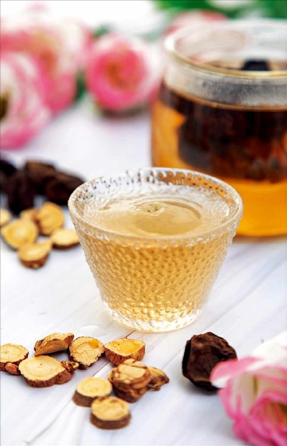
酸梅汤
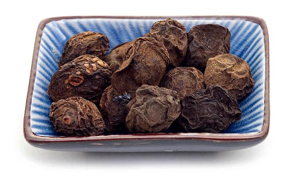
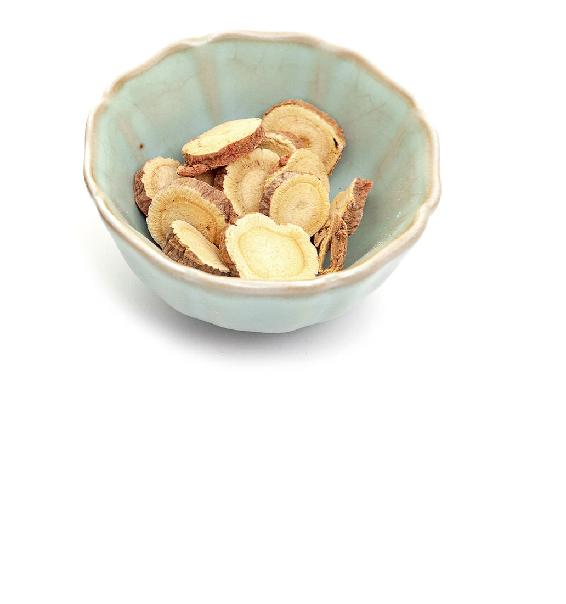
原料：乌梅12个，甘草6克。
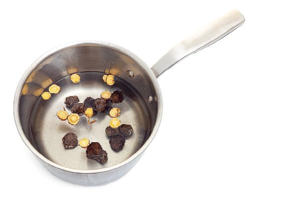
做法：把乌梅、甘草放入锅中，然后加入冷水煮开。水开以后再煮20分钟。
允斌叮嘱：
1.做好的酸梅汤，是不能冰镇喝的，最好是温着喝效果才好。
2.不是颜色乌黑乌黑的都叫乌梅。我曾经在一家电视台录节目讲乌梅的时候，编导准备的道具是一盘子从超市买的话梅，话梅看起来也是乌黑乌黑的，但是记住，乌梅并不只是指它的颜色。
3.乌梅是一味中药，要到中药店去购买。因此，您千万不要去超市买它。什么是乌梅呢？就是我们在初夏时吃的梅子，经过烘干、烟熏制过以后，会变得乌黑乌黑的，这个就是乌梅。注意草木烟熏的乌梅黑得很自然，带一点棕褐色，不要买看起来黑得发亮的那种。
之前我讲过胡椒粉引火归原的原理，胡椒粉很热性，但是它却可以调治虚火上浮，这是因为它能把虚火引回到身体的本原（肾脏系统），来温暖肾脏系统。而乌梅也有类似的作用，它可以引气归原，把体内乱窜的气收回到肾脏系统，让它归回本位。
当身体的气往上走了，人就会觉得很热，会上火、出汗；当气往下跑了，肚子里会咕噜咕噜的。出现这样一些情况，我们就说是气没在本位导致的，这个时候我们要让它归回本位。
怎么做呢？我们可以去理气，把它散掉。但如果理气太过就会伤气，这时候就要用乌梅来把这个气给引回去，让它回到人体的本原。这样就既不会伤气，又可以理气。因为在初秋，身体不适宜过多地散气，为的是更好地保护人体宝贵的正气。
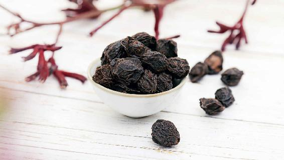
我们可以把气理解成人体的能量，如果这个能量去了不该去的地方，走了不该走的方向，就变成了负能量，会伤害我们的身体。而乌梅的作用就是把它领回正路，变成正能量，这样就能保护我们的身体。
初秋的时候，我们人体的气比较虚，如果这时候出现气不在本位的现象，最好不要随意去吃很多理气的东西，会伤气的。
当初秋的这些症状调理好之后，还要记住，在明年春天的时候要好好地养肝，因为前面所说的种种症状都跟肝很有关系，所以只有在春天的时候养好了肝，到秋天的时候才不容易出现这些问题。
每一次季节交替的时候，我们身体出现的种种现象，其实都是一个很强烈的信号，提示哪个脏腑出现了问题，因此我们要仔细观察这种信号，及时地去解决问题，以免贻误调理的时机，到最后酿成大祸。
2017年6月四川茂县发生高位山体垮塌的时候，我曾经分享过我的看法，老祖宗说过：“知命者不立乎岩墙之下”。有些天灾，我们往往会认为是飞来横祸，是偶然发生的。其实不然，在大自然发生的灾害中，往往都是有先兆，有蛛丝马迹可寻的，只是我们可能还不明白其中的道理。其实，我们真的可以像古人那样“知命者不立乎岩墙之下”，尽量地事先预防、回避。
养生就是要跟着自然走，时时刻刻精细地观察自然的变化，了解天时、地利的变化对我们身体的影响，同样也要时时刻刻关注身体的变化，身体有了什么问题，它往往都会通过“外在”先表现出来。
便秘、腹泻等，我们往往认为是小事，其实都是身体给我们发出的警告，如果及时地去调理，就不会在突然出现的大病面前感到不知所措了。
读者评论：喝了酸梅汤，小腹瘦了一半
医采|陈陈：今年皮肤反复过敏，喝了酸梅汤，止痒效果杠杠的。
杨志花：女儿睡觉总是盗汗，看到老师书上讲到酸梅汤止汗，于是煮了给孩子喝。孩子喝了几次后再也没有盗汗了。
偷着乐：我曾失眠多年，坚持喝酸梅汤，现在早上能睡到5点左右。以前人瘦、腹部鼓胀，现在小腹也瘦了一半。
国莲：这段时间拉便便都是黏黏的，不成形，喝了酸梅汤，第三天便便就成形了。老师你的方子太棒了。
狮子座的Lin：喝了酸梅汤最大的效果，就是现在去外面吃饭不会拉肚子了。
HUIHONG_YE：喉咙痛，喝了酸梅汤， 第二天就不痛了。
涂涂：我天天都喝酸梅汤，它不仅好喝，而且解渴，还能调理小便发黄、上火。
周周：我推荐酸梅汤给邻居妹子喝，没想到竟治好了她多年的背部酸胀、腹部呕气。她说之前她到上海各大医院去看，光熬中药就用了好几罐煤气，西药也吃了不少，但都没什么效果。现在喝了几次酸梅汤就好了！
美小猴：感恩老师，喝了八九天的酸梅汤，出汗多的毛病有了极大改善，精气神也足了。
HAPPY：每天熬一大锅酸梅汤，全家喝光光。
尤尤：晚上睡觉胸前出很多汗，白天喝了一天酸梅汤，晚上睡觉立马见效，真的太神奇了。